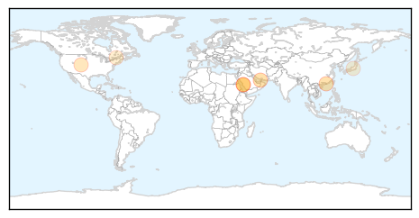

MERS
30-Day Web Trend
1 alerts, 0 warnings

30-Day Twitter Trend
1 alerts, 0 warnings

Article Locations

Article Confidences

Top Articles:
- 1.000
- Saudi closes emergency ward after MERS spike
- 0.999
- Saudi closes emergency ward after spike in MERS virus cases
- 0.997
- Vaccine against Middle East Mystery Disease Shows Promise
- 0.994
- Emergency steps taken to defeat MERS as more fall victim to virus
- 0.984
- No cause for alarm over MERS outbreak!
- 0.968
- MERS Less Fatal In South Korea Than In Saudi Arabia, Analysis Reveals
- 0.950
- MERS less fatal in South Korea than in Saudi Arabia, analysis reveals
- 0.935
- Saudi Arabia registers increase in MERS corona cases - Xinhua
Top Tweets:
-
No tweets found for Aug 19, 2015
Meningitis
30-Day Web Trend
2 alerts, 0 warnings

30-Day Twitter Trend
2 alerts, 0 warnings

Article Locations
Article Confidences

Top Articles:
- 0.984
- Pilgrims advised to vaccinate before leaving for Haj
- 0.955
- CHP closely monitors meningococcal cases linked to international Scout jamboree
- 0.941
- UAE residents travelling to Mecca urged to stay on top of vaccines
- 0.937
- 25 hospitals with 5,000 beds readied in holy citiesHealthcare
- 0.778
- ‘It’s Not Too Bad … All You Take Is Tylenol’ Says Fellow Student Of Meningitis Patients « CBS Denver
- 0.663
- Bottled water buys, chlorine burns follow amoeba discovery
- 0.566
- Montreal Children’s ER beset by equipment problems, long waits and staff shortages
- 0.513
- Another suspected case of meningitis after scout jamboree - Radio Sweden
Top Tweets:
-
No tweets found for Aug 19, 2015